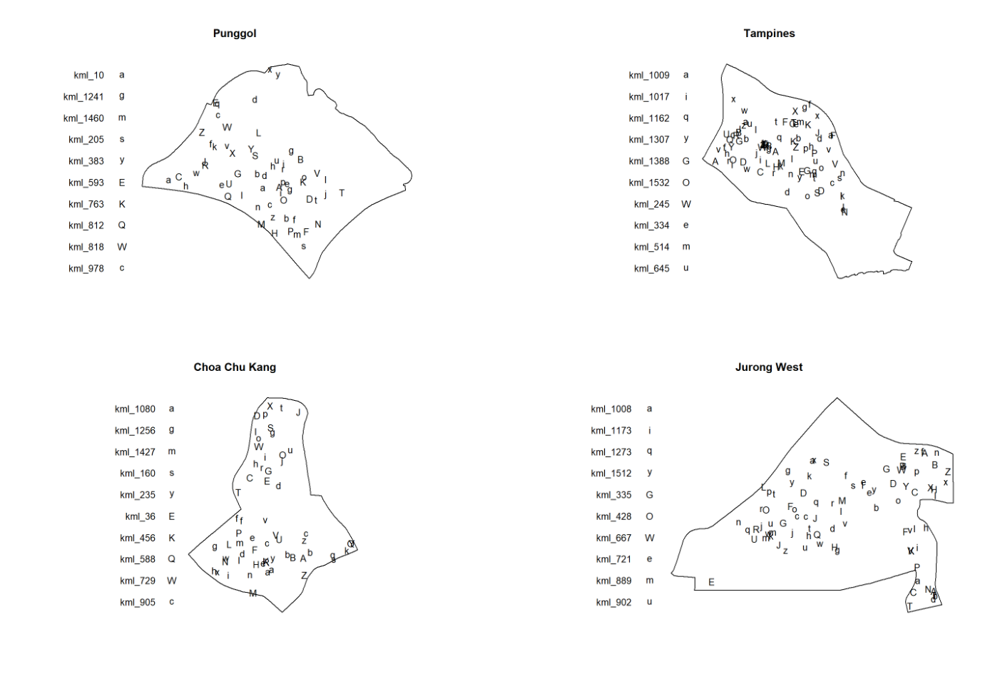
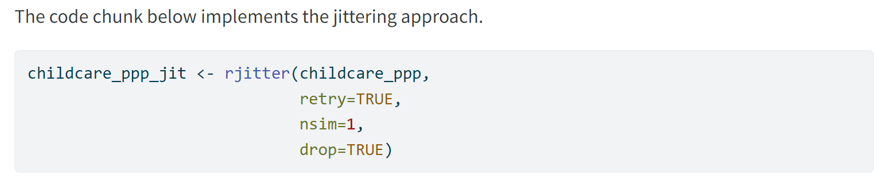

pacman::p_load(sf,spatstat,raster,tmap,tidyverse)In-class Exercise 2
In-class Exercise 2
Issues with Hands-on Ex 2
Installing and Launching R packages
sf for importing, managing, and processing vector-based geospatial data, and
spatstat, which has a wide range of useful functions for point pattern analysis. In this hands-on exercise, it will be used to perform 1st- and 2nd-order spatial point patterns analysis and derive kernel density estimation (KDE) layer
raster which reads, writes, manipulates, analyses and model of gridded spatial data (i.e. raster). In this hands-on exercise, it will be used to convert image output generate by spatstat into raster format.
maptools which provides a set of tools for manipulating geographic data. In this hands-on exercise, we mainly use it to convert Spatial objects into ppp format of spatstat.
tmap which provides functions for plotting cartographic quality static point patterns maps or interactive maps by using leaflet API.
tidyverse for performing data science tasks such as importing, wrangling and visualising data.
The packages are loaded with the following code chunk:
Issue 1: Defunct maptools package
Tip
maptools is retired and binary is removed from CRAN, however it can be downloaded from Posit Public Package Manager (this site is useful for Shiny) snapshots by using the code chunk below. Alternatively, can utilise the CRAN retired website and key in the latest version.
install.packages("maptools",
repos = "https://packagemanager.posit.co/cran/2023-10-13")
Tip
utilise #| eval: false after installing the packages to avoid the code from re-running everything the page is rendered
Issue 2
- sf is a full programmable GIS software - does all the GIS work
Working with st_union() to manipulate spatial data
- The code chunk below st_union() is used to derive the coastal outline of sf tibble data.frame
sg_sf <- mpsz_sf %>%
st_union()plot(sg_sf)Introducing spatstat
spatstat has several sub-packages, the notable ones:
spatstat.geom: if its sp object - use ppp or owin, if its sf object - use as.ppp or as.owin. Prof advised not to use sp object at all, just use sf.
as.ppp - allow creation of point object
as.owin - create the boundary
Kernel Density Estimation
Code chunk shows 2 different ways to convert KDE output into grid object
par(bg ="#E4D5C9")
gridded_kde_childcareSG_ad <- maptools::as.SpatialGridDataFrame.im(kde_childcareSG_adaptive)
spplot(gridded_kde_childcareSG_ad)To use spatstat.geom method instead of maptools since the latter is now defunct:
gridded_kde_childcareSG_ad <- as(kde_childcareSG_adaptive,
"SpatialGridDataFrame")
spplot(gridded_kde_childcareSG_ad)Monte Carlo Simulation
to ensure reproducibility, to always set a seed before using spatstat functions that involve Monte Carlo simulation
likewise, this should be applicable for other randomisation processes
set.seed(1234)Edge correction methods of spatstat
Edge correction help to avoid biases that arise when estimating spatial statistics near the boundaries of a study area
important when extracting spatial area cause there might be data points close to the edge, for instance:

For beginners, to test out the different methods for edge correction
However, there is always the option of not carrying out edge correction if points are not near the edge as this process would take up computation time
Handling duplicated points
Multiple points can overplot each other i.e. HDB with the same postal code - calculations will not truly reflect distribution
in hands-on exercise 2, there is no duplicate results hence the steps are actually redundant but is for learning purposes
Section 1.5.4 of Hands-on Exercise 2
For section 1.5.4, to increase nsim as the code chunk only shows 1 time.

Section 1.5.4 of Hands-on Exercise 2
sf_geometry
Section 1.7.5 of Hands-on Exercise 2
sp_geometry to remove the attribute